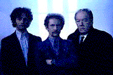
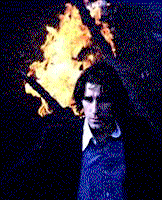

|
|
|
| Movie Credits | Buy It! |
Nothing Personal
Review by Carrie
Gorringe
Posted 16 May 1997
Directed by Thaddeus O'Sullivan Starring John Lynch, Ian Hart, Screenplay by Daniel Mornin |
The time is 1975, and Belfast is in its sixth year of what would soon be known to history as yet another eruption of the euphemistically-named, "Troubles". Kenny (Frain), a Protestant paramilitary who is in charge of a group of terrorists, is dispatched by his boss (Gambon) to find and take care of the Catholic terrorists who planted a bomb in an Ulster-controlled pub. Among his compatriots is Ginger (Hart), a henchman who has been so poisoned by ideology that his hatred for the "other" borders on the psychopathic. Meanwhile, Liam (Lynch), the Catholic father of two children, has gone to the Protestant sector because he is in need of a drink and the pubs are closed on his side of the street. When the lives of Liam and Kenny intersect, surprises and tragedy await.
O’Sullivan and Mornin are a brave pair of collaborators, not least of all because they choose to speak the obvious in a most unromanticized fashion; unlike earlier films, such as In the Name of the Father, this film chooses not to depict acts of terrorism as a noble calling, and the actors involved as martyrs. Indeed, as Nothing Personal unfolds, it becomes more than apparent that any legitimate grievances (and there were many) that spurred the fighting in Northern Ireland have simply degenerated into a criminal enterprise not unlike that of the American Mafia. When Kenny tells Liam, after Kenny’s "assistants" have beaten Liam nearly senseless, that it’s "nothing personal", the urge to conclude Kenny’s phrase with another borrowed from the Corleone family– that all of the brutality visited upon Liam is "just business" – is absolutely irresistible, and undoubtedly not coincidental. Forget the outrages such as Battle of the Boyne, the Potato Famine and the continuing provocations of the "King Billy" parades; in this film, it is clear that a rigid adherence to ideologies has become mere window dressing for those at the very top of both organizations. The heads of the Ulster and IRA factions are old friends who settle turf wars with a little convivial "understanding"; as their faces, lined with the ugliness of their cynicism and self-loathing at the recognition of it in the other’s face, meet in close-up to agree that the bomber’s actions were wrong only because unsanctioned, the justification for their co-existence transgresses into the realm of the obscene, and hits the audience like a bucket of cold water across the face. Their profiles may meet like those on two Roman coins placed side by side, but the currency they peddle is worthless.
The film effectively and damningly demonstrates how terrorism, stripped of its usual defense of pretending to act in the name of a higher cause, has degenerated into a mere profession, and its general practitioners are nothing more than violent street thugs whose uniform of choice, like that of their American gangster counterparts, is the requisite black leather jacket, and/or the ill-coordinated, ill-fitting suit. Those who take the "game" too seriously, as Ginger does, are the troublemakers, because they have the potential to interrupt the flow of money. If the IRA’s MO is illustrated by the proverb, "the enemy of my enemy is my friend," Nothing Personal illustrates how difficult it is to distinguish between the two. In fact, the entire film is more reminiscent of another proverb, namely the one about not needing any enemies with "friends" like these. There’s no need to shed tears for either side in this so-called struggle for freedom; the only victims in this horrible farce are the unfortunates, both inside and outside the organizations, who realize the fraudulence of everybody’s claims, but soldier onward grimly anyway, mainly because the unrelenting guerilla warfare has sapped initiative from their minds and replaced it with fear.
With this analogy framework in place, the characters involved therein need only represent themselves as stereotypes for the film to effectively convey its message. Fortunately, the three main performers – Lynch, Frain and Hart – give much more of themselves, to the film’s benefit. Lynch and Frain gradually and skillfully unfold their character’s secret pains and dreams in pace with the film’s unfolding of plot and their synchronization only empowers the sense of madness about it all. Speaking of madness, Ian Hart, who gave a flawless performance as the disillusioned revolutionary in last year’s Land and Freedom, takes on the flip side of quiet revolution in the eponymous Ginger, and fills him with overpowering levels of cruelty and rage that Ginger acts as the id to the Ulsters’ superego; he evolves into an uncomfortable reminder of what the organization uses to fight for and should be fighting for now. He is certainly an anachronism, one that can be tolerated, as long as he is useful, and there are times when a little superfluous violence keeps everyone in line. But such usefulness, as Ginger is soon to discover, has its limits.
This is not to say that Nothing Personal is without problems. The ending is maudlin enough to nearly overplay the skillful hands dealt by the director and screenwriter throughout. Closely related to this point is the symbol of the blond-haired innocent – Liam’s daughter – who seems to float though the film as a remonstrating counterpoint to the brutality around her. In contrast to the uncompromising world around her – cinematographer Dick Pope has subtly washed the daytime skies with a touch of greyness and the night with hard, garish light to drive the point home – she may be the oasis in the midst of misery, but her presence is also too overwhelming The film’s pace is also interminably slow; arguably, this pacing is supposed to approximate the real lifestyle of a terrorist as it alternates between long stretches of boredom and short bursts of terror, but the speed at which this film unfolds is far too leisurely, as if it has gotten caught up in its good intentions far too much; the effect on the audience may leave its members with the impression that the film has too little to say and far too much space in which to say it. More information about the main characters’ backgrounds would have alleviated these problems considerably. Such are the problems with Nothing Personal, but they are minor points compared with the hard and bitter truths the film reveals to those who would care to see them.
Contents | Features | Reviews | News | Archives | Store
Copyright © 1999 by Nitrate Productions, Inc. All Rights Reserved.